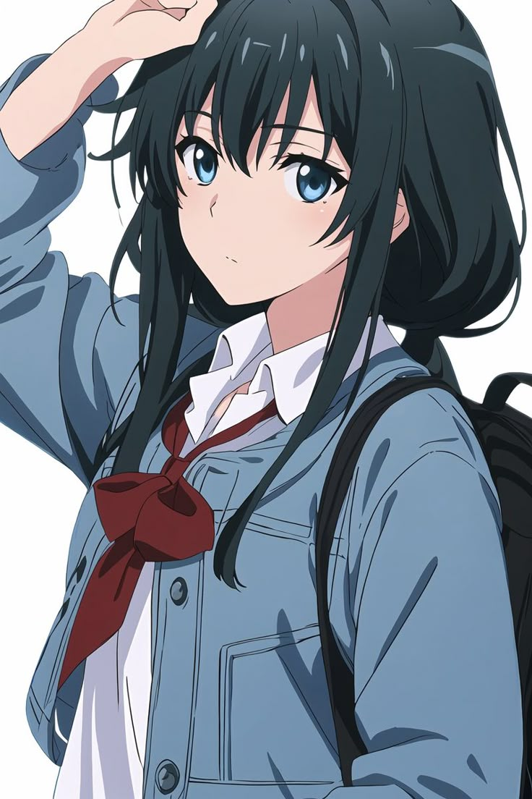

Yukinoshita adalah karakter yang cerdas, perfeksionis, dan memiliki sikap dingin namun logis. Ia memimpin Klub Pelayanan.
Perjalanan emosionalnya berkembang berkat hubungan dengan Hachiman dan Yui, yang membentuk dinamika rumit dan menyentuh.